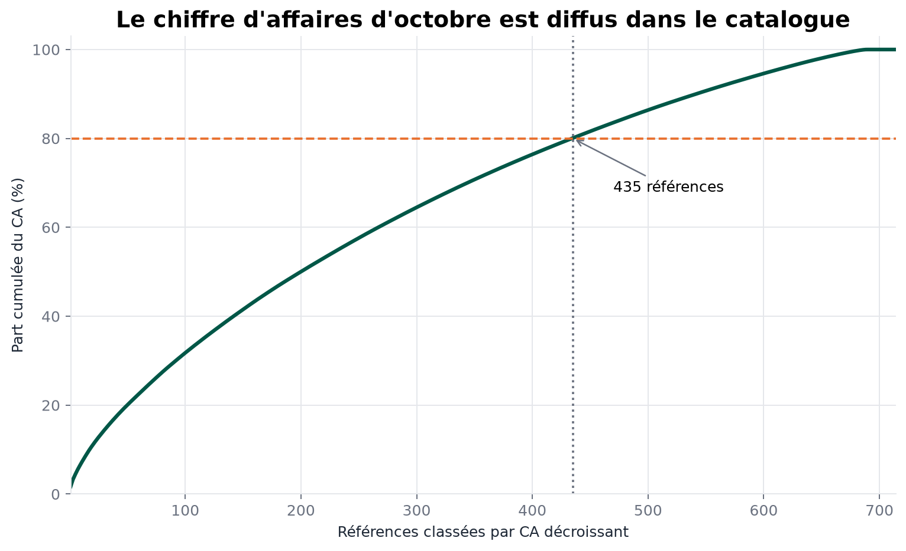

Quels produits vendre, surveiller, réapprovisionner ou faire contrôler ?Which products should be sold, monitored, replenished or reviewed?
Projet 01 · Étude de cas complèteProject 01 · Full case study
Trois sources. Une vérité métier défendable.Three sources. One defensible business truth.
J’ai transformé des exports ERP, Web et de liaison imparfaits en une analyse reproductible des ventes, des marges et du stock — sans masquer les anomalies ni fabriquer de correspondances.I turned imperfect ERP, Web and mapping exports into a reproducible sales, margin and inventory analysis—without hiding anomalies or inventing matches.
- RôleRole
- Data analyst, de bout en boutEnd-to-end data analyst
- PérimètreScope
- Ventes d’octobreOctober sales
- SourcesSources
- ERP · liaison · Web
- LivrablesDeliverables
- Pipeline, notebook, CODIRPipeline, notebook, exec deck
01 · Contexte01 · Context
Passer de fichiers séparés à des décisions produit.Move from separate files to product decisions.
La direction voulait savoir quelles références généraient du chiffre d’affaires et de la marge, lesquelles immobilisaient du stock et où concentrer une revue métier. Les informations utiles étaient réparties entre un ERP, une table de liaison et un export Web mêlant produits, pièces jointes et lignes structurelles.Management needed to know which products generated revenue and margin, which tied up inventory and where to focus a business review. The useful information was split across an ERP, a mapping table and a Web export mixing products, attachments and structural rows.
825références ERPERP records
714produits rapprochésmatched products
5 751unités en octobreOctober units
3sources auditéesaudited sources
Cadrage, audit, préparation, analyse, visualisation, validation et restitution.Scoping, audit, preparation, analysis, visualization, validation and presentation.
02 · Défi02 · Challenge
Le principal risque n’était pas le calcul, mais le double comptage.The main risk was not the calculation. It was double counting.
Une même référence pouvait apparaître sous plusieurs formes dans l’export Web. Additionner toutes les lignes aurait gonflé le chiffre d’affaires de 107,01 %. Garder arbitrairement la première ou la dernière ligne produisait un résultat dépendant de l’ordre du fichier.A single product could appear in several forms in the Web export. Summing every row would have overstated revenue by 107.01%. Arbitrarily keeping the first or last row produced a result dependent on file order.
- 91 identifiants Web étaient absents de la table de liaison.91 Web identifiers were missing from the mapping table.
- 20 liens renseignés ne retrouvaient aucun produit Web.20 populated links did not match any Web product.
- Les SKU nuls ne pouvaient être ni appariés ni remplacés par une clé inventée.Null SKUs could neither be matched nor replaced with an invented key.
- Les prix, stocks et ventes atypiques devaient rester visibles pour revue métier.Unusual prices, inventory and sales had to remain visible for business review.
Décision structuranteCore decision
Retenir le filtre sémantique post_type="product", auditer chaque anti-jointure et mettre les cas non fiables en quarantaine au lieu de les corriger silencieusement.Use the semantic post_type="product" filter, audit every anti-join and quarantine unreliable cases instead of silently correcting them.
03 · Démarche03 · Approach
Une chaîne contrôlée, du fichier brut à la recommandation.A controlled chain from raw file to recommendation.
- Auditer les contrats de donnéesAudit data contractsSchémas, types, domaines, clés nulles, unicité et cardinalités sont contrôlés avant toute analyse.Schemas, types, domains, null keys, uniqueness and cardinalities are checked before analysis.
- Séparer les entités WebSeparate Web entitiesLes produits sont distingués des pièces jointes et lignes structurelles par leur sens métier.Products are separated from attachments and structural rows using business meaning.
- Rapprocher avec des cardinalités déclaréesReconcile with declared cardinalitiesLes jointures un-à-un et plusieurs-à-un échouent explicitement si leur contrat est rompu.One-to-one and many-to-one joins fail explicitly when their contract is broken.
- Calculer sans effacer les anomaliesCalculate without erasing anomaliesCA, marge, taux de marque, rotation et couverture sont séparés des cas mis en quarantaine.Revenue, margin, markup, turnover and coverage are separated from quarantined cases.
- Restituer pour deux publicsPresent for two audiencesLe notebook donne la traçabilité technique ; le support CODIR concentre les décisions, risques et limites.The notebook provides technical traceability; the executive deck focuses on decisions, risks and limits.
04 · Résultats04 · Outcomes
Des chiffres utilisables parce que leurs frontières sont explicites.Numbers are usable because their boundaries are explicit.
143,7 k€CA TTC d’octobreOctober revenue incl. tax
44,7 k€marge brute HTgross margin excl. tax
165constats qualitéquality findings
17tests automatisésautomated tests
Le Pareto permet de concentrer la revue sur les références qui pèsent réellement dans l’activité.The Pareto view focuses review on the products that materially affect the business.
7 erreurs certaines, 125 anomalies probables et 33 valeurs inhabituelles mais plausibles sont séparées.7 confirmed errors, 125 probable anomalies and 33 unusual but plausible values are kept distinct.
Ruptures potentielles, surstocks et stocks sans vente alimentent une file de revue, pas une action automatique.Potential stockouts, overstock and no-sale inventory feed a review queue, not an automatic action.
Le même pipeline alimente le notebook, les exports, 22 fichiers de figures et la synthèse de 12 slides.The same pipeline feeds the notebook, exports, 22 figure files and the 12-slide summary.
05 · Preuves05 · Evidence
Deux vues pour vérifier le raisonnement.Two views to verify the reasoning.


06 · Limites06 · Limitations
Ce que l’analyse ne prétend pas démontrer.What the analysis does not claim to prove.
- Les ventes couvrent octobre et le stock est une photographie au 31 octobre ; aucune annualisation n’est défendable.Sales cover October and inventory is a snapshot as of October 31; no annualization is defensible.
- L’année, la TVA à 20 %, le sens des retours et certains statuts doivent être confirmés par les propriétaires métier.The year, 20% VAT assumption, returns meaning and some statuses require confirmation from business owners.
- Une valeur atypique est un signal de revue, pas la preuve d’une erreur.An unusual value is a review signal, not proof of an error.
- Les corrélations prix, ventes et stock restent descriptives et ne démontrent aucune causalité.Price, sales and inventory correlations remain descriptive and do not establish causality.
07 · Compétences démontrées07 · Skills demonstrated
Fiabiliser, expliquer, puis décider.Make it reliable, explain it, then decide.
Contrats, cardinalités, anti-jointures, quarantaine et traçabilité.Contracts, cardinalities, anti-joins, quarantine and traceability.
Pipeline modulaire, exports reproductibles, tests et validation finale.Modular pipeline, reproducible exports, tests and final validation.
Traduction des KPI en priorités de stock, marge et catalogue.Translation of KPIs into inventory, margin and catalog priorities.
Niveaux de lecture distincts pour l’équipe technique et le CODIR.Distinct reading levels for technical teams and executives.